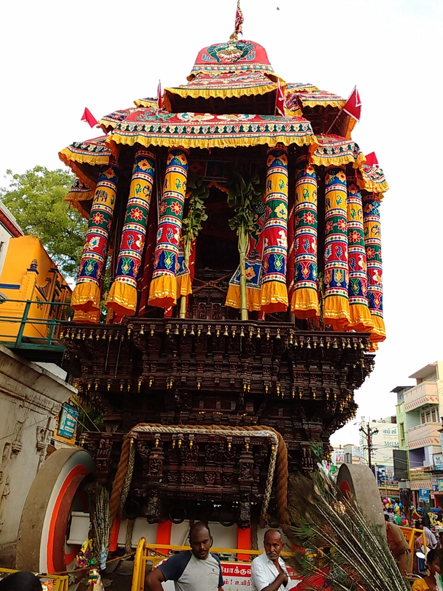
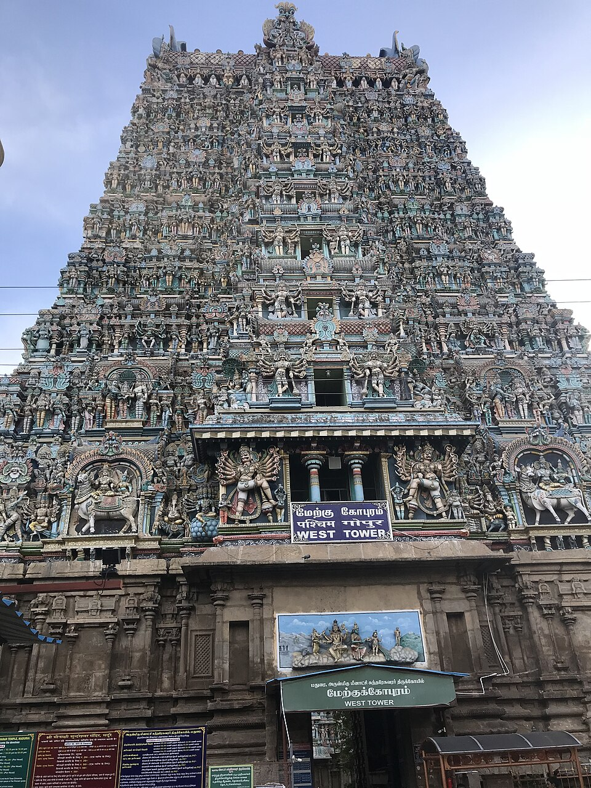
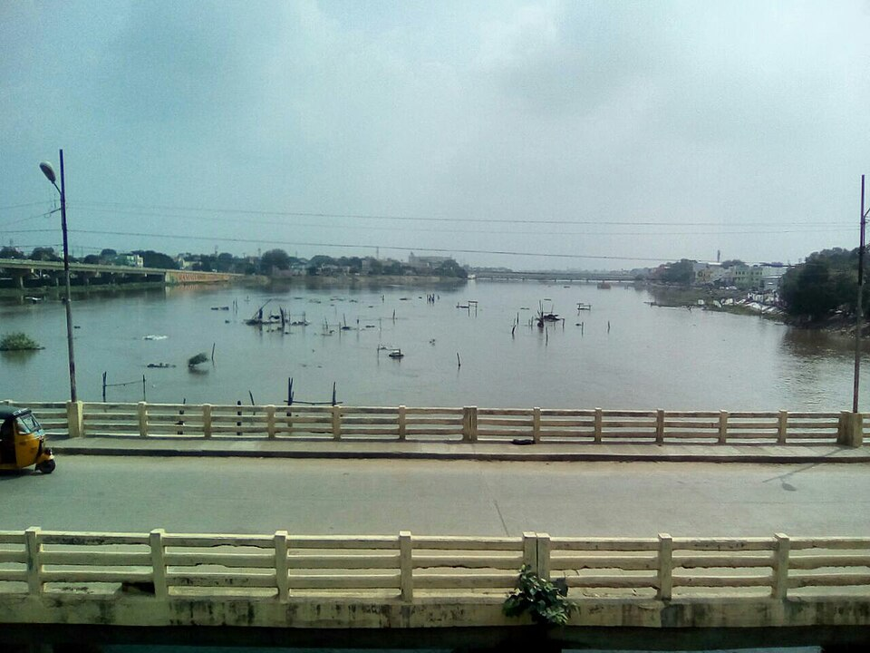
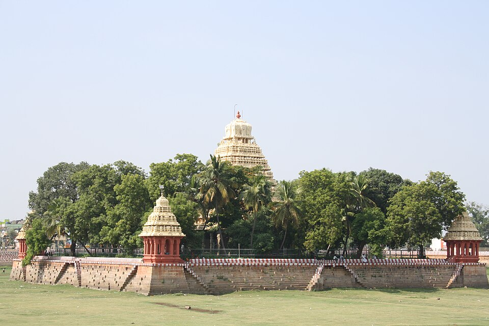
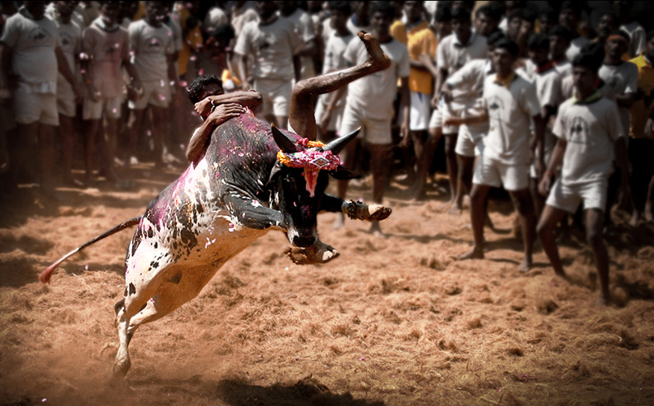

DISCOVER SIGHTS ACROSS MADURAI DISTRICT
Eighteen landmark destinations across the district — iconic gopurams, Pandya rock-cut shrines, 2,000-year-old Jain caves, the Vaigai dam, and the thrilling Jallikattu grounds of Alanganallur and Palamedu.
SACRED ARCHITECTURE & LIVING TRADITIONS
From the soaring gopurams of Meenakshi Amman Temple to rock-cut cave shrines and guardian folk deities, Madurai's sacred landscape reflects millennia of continuous worship.
| Temple | Area | Known for | Significance |
|---|---|---|---|
| Meenakshi Amman Temple | Madurai Main | Meenakshi & Sundareswarar | Central landmark of Madurai; 14 colossal gopurams and Thousand Pillar Hall. |
| Thirupparankundram Murugan Temple | Thirupparankundram | Lord Murugan | First of the Arupadaiveedu; rock-cut cave architecture & ancient Jain heritage around the hill. |
| Azhagar Kovil | Azhagar Hills | Lord Alagar (Vishnu) | Celebrated temple nestled in forested hills; focal deity of the Chithirai Vaigai festival. |
| Pazhamudircholai | Azhagar Hills | Lord Murugan | Sixth abode of Lord Murugan, set amidst lush forested hills and natural mountain springs. |
| Koodal Azhagar Temple | Madurai | Lord Vishnu | Ancient three-tiered sanctum showing Lord Vishnu in standing, seated and reclining postures. |
| Immaiyilum Nanmai Tharuvar Temple | Periyar | Lord Shiva | Identifiable historic temple where Lord Shiva is depicted worshipping a Shiva Lingam. |
| Pandi Muneeswaran Temple | Madurai (Melamadai) | Local Deity Tradition | Revered guardian deity shrine representing authentic folk devotion, bell offerings, and vows. |
| Mariamman Teppakulam | Teppakulam | Mariamman / Float Festival | 16-acre sacred square reservoir built in 1645 by King Thirumalai Nayak with island pavilion. |
| Thiruvedagam Temple | Near Madurai (Sholavandan) | Shiva Temple (Edaganathar) | Historic Paadal Petra Shiva temple along the Vaigai where palm manuscripts swam upstream. |
LIVING HERITAGE & SPECTACLES
Tamil Nadu Tourism lists the Chithirai Festival, Float Festival, and Jallikattu among Madurai's major cultural attractions, drawing millions of visitors from across the globe.

GRAND CARNIVALOne of Madurai's most important cultural and religious celebrations, uniting Shaivite and Vaishnavite traditions with majestic wooden temple chariots, street processions, and ecstatic citywide devotion.

SACRED NUPTIALSThe celestial wedding of Goddess Meenakshi and Lord Sundareswarar. A major highlight of the Chithirai celebrations, attended by hundreds of thousands of devotees who renew their marriage vows.

RIVERSIDE SPECTACLEA major festival event involving Lord Kallazhagar's traditional journey from the Azhagar Hills mounted on a golden horse, entering the sacred waters of the river Vaigai amidst a sea of cheering devotees.

ILLUMINATED WATERSAssociated with the Mariamman Teppakulam. The deities of Meenakshi and Sundareswarar are drawn on a brightly illuminated floating raft (teppam) adorned with thousands of flowers and lamps across the 16-acre tank.

TAMIL VALOURA major traditional Tamil cultural event celebrated with thunderous passion across the Madurai region, held at legendary historic arenas in Alanganallur, Palamedu, and Avaniyapuram.
NEIGHBOURHOOD DIRECTORY & WHAT EACH AREA IS FAMOUS FOR
Understand Madurai district's unique character by exploring its distinct quarters, heritage streets, modern retail nodes, and archaeological sites.
Meenakshi Temple, historic streets, jasmine flower markets, and ancient core.
Thirumalai Nayakkar Mahal, Indo-Saracenic pillars, light & sound show, and street snacks.
Temple streets + shopping + food; Madurai Sungudi sarees, brassware, and tiffin.
Traditional food + markets; Kari dosa, hot mutton bone soup, parotta, and night stalls.
Restaurants + shopping; Vegetarian tiffin, sweet shops, clothing, and everyday bustle.
Food + commercial streets; Historic 1840 lamp post, chilled Jigarthanda, and tailoring.
Teppakulam + evening food; 16-acre temple tank, float festival, and lakeside strolls.
Messes + restaurants; Famous Chandran Mess, kola urundai, and biryani houses.
Modern restaurants + shopping; Zaitoon Middle Eastern grills, cafes, and upscale avenues.
Restaurants + hotels; Madurai Kitchen, family restaurants, and commercial centres.
Historic Dargah + food + commercial area; Sulthan parotta and buzzing street life.
Restaurants + airport-side area; Jallikattu arena, Ayyan restaurant, and airport corridor.
Integrated bus terminal + hotels + Central wholesale flower and produce market.
Murugan Temple + heritage; First Arupadaiveedu, rock-cut shrines, and Jain cave beds.
Lord Kallazhagar Temple + forested hills + Pazhamudircholai Murugan shrine.
Samanar Hills (Samanar Malai); 2,000-year-old rock beds, Jain bas-reliefs, and lotus pond.
Archaeology; 2,600-year-old Sangam-era urban civilization excavation and modern museum.